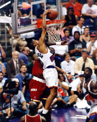

Martin Manley: My Life and Death
Born 8-15-53, Died 8-15-13 , Age 60
- Home Page
- January 1, 2012
- June 11, 2012
- Suicide Preface
- Why Suicide?
- Why not?
- Why Age 60?
- Self-Serving?
- Suicide - How 2
- Gun Control
- Other Suicides
- Other Quotes
- ------------------------------------
- Growing Up
- OMG: I look 60!
- Mom and Dad
- The Heavens
- My Religion
- Chancel Choir
- Victory O Lord
- The Proposal
- Two Marriages
- First Two Loves
- Pictures
- Trips and Travel
- Writing Fiction
- Music & Poetry
- Movies & TV
- Health
- Sleep Deprived
- Living Donor
- Food & Drink
- Creations
- Sports
- KC Star
- KC Tornado
- My IQ
- Synesthesia
- Poker
- Legal
- JOCO, Ks.
- U.S. Financial
- 911 & Conspiracies
- COOL STUFF
- Births & Deaths
Kevin Johnson
Of all the players in sports that I have liked and of all that were my favorite player in a given sport at a given time... of all of them I could talk about on this site, there is only one that I'm going to devote a separate category to... only one that I'm going to leave as a last word - Kevin Johnson.
Kevin Johnson (Phoenix Suns 1988-1999) is my all-time favorite basketball player. He became the first African American mayor of Sacramento in 2008 and was reelected in 2012. If you don’t know that much about him, you owe it to yourself to learn. If you can’t remember, you owe it to yourself to be reminded. There aren’t many stories like this and I just happen to be very familiar with his.
KJ was a high school star in Sacramento before attending California University, so he has always been popular in his hometown. Despite playing for the Phoenix Suns, he would often get applause when Phoenix would play in Sacramento against the Kings. KJ was always very personable and was even named as one of George Bush’s "1,000 Points of Light" for his work with underprivileged kids. His St. HOPE Academy is thriving in Sacramento to this day. In addition, he was given the NBA’s Citizenship Award.
But, no matter how impressive a guy he is, my reason for liking him is what he did on the court. KJ was traded to Phoenix from Cleveland late in his rookie season. The next year the Suns increased their wins from 28 to 55 – one of the largest turnarounds in NBA history. That’s when I fell in love with his play and Phoenix became my favorite team.
Johnson was a very unselfish player, a tireless worker and an intense competitor. He led Phoenix to 53 or more victories seven consecutive years from 1989-1995. During that period, the Suns won more games than any other franchise - even more than the Chicago Bulls who won three titles in that span of time.

His career was cut a little short simply because he was almost too fearless entering the lane. In fact, one of the most famous dunks in NBA history – one which is shown on almost all the NBA highlight films – was the 6'1" Johnson driving down the lane and dunking over Houston's center and Hall-Of-Famer, Akeem Olajuwon. That’s the kind of player he was and the kind of leader he is. It’s no surprise that he has gone on to accomplish additional goals outside of the basketball court. At 46 years old, he’s still young enough to become President of the United States one of these days. That would make the 1,000 KJ rookie cards I passed on actually worth something!
In 1994, the announcement was made regarding the make up of Dream Team II. KJ was not on the team which I felt to be just as absurd as Isiah Thomas not being on Dream Team I. Ironically, late in the '94 season, Thomas was injured and a replacement would be needed for Dream Team II. I immediately went on a campaign to get KJ selected. Eventually, he was picked and I received a letter from David Stern (NBA Commissioner) which said "Thanks for your letter concerning Kevin Johnson. You letter did the trick!" Whether my letter or arguments for KJ made any difference doesn't really matter. He was given his due. Dream Team II went undefeated and won the Gold Medal.
KJ scored 20+ points and 10+ assists three times in his career. But, that doesn’t really tell the whole story. One other season he was 19.7 and 10.7. Yet another season he was 20.0 and 9.5. And, one other year he went for 20.1 and 9.3. He was that close to doing it six times in his career.
So, let’s examine the question of which players have had the most seasons in which they scored at least 19.7 ppg and had at least 9.3 apg. KJ did it six times and, as it turns out, second only to the Mr. Triple Double himself – Oscar Robertson.
Player | Span | Team | Times |
Oscar Robertson | 1961-69 | Cincinnati | 9 |
Kevin Johnson | 1989-97 | Phoenix | 6 |
Isiah Thomas | 1984-87 | Detroit | 4 |
Tim Hardaway | 1991-95 | Golden State | 4 |
Magic Johnson | 1987-90 | LA Lakers | 3 |
Chris Paul | 2008-09 | New Orleans | 2 |
Jerry West | 1971-72 | LA Lakers | 2 |
Michael Adams | 1991 | Denver | 1 |
Tiny Archibald | 1973 | Kansas City | 1 |
Deron Williams | 2011 | Utah/NJ | 1 |
Perhaps just as amazing is this stat. If you take all the points a player scored and take all his assists times two... you come up with all the points he is responsible for. For the nine seasons from 1989-1997, KJ ranked #4, but look at the rest of the top-10.
Name | Pts | Ast | Pts Responsible For |
John Stockton | 11528 | 9347 | 30,222 |
Karl Malone | 20342 | 2590 | 25,522 |
Michael Jordan | 18290 | 3333 | 24,956 |
Kevin Johnson | 11879 | 6005 | 23,889 |
Scottie Pippen | 13521 | 4021 | 21,563 |
Mitch Richmond | 15748 | 2644 | 21,036 |
Hakeem.Olajuwon | 16801 | 1997 | 20,795 |
Patrick Ewing | 17532 | 1628 | 20,788 |
Clyde Drexler | 13547 | 3516 | 20,579 |
Charles Barkley | 15177 | 2691 | 20,559 |
COOL FACTOID: Of these 10 players, only two are not in the Hall of Fame – Kevin Johnson and Mitch Richmond.
And, that gives me a reason to rerun a cool factoid on why Mitch Richmond should be in the Hall of Fame.
COOL FACTOID: Of the 38 players in NBA history that have qualified for the Hall of Fame and were All-NBA at least five times, 36 are in the HOF. The only two that are not are Mitch Richmond and Kevin Johnson!
Here is an article I wrote on why Mitch Richmond (played at Kansas State) should be in the Hall Of Fame.
KJ’s statistics are fantastic, but probably what most defines his career – and what has prevented him from being a shoe-in for the Hall of Fame were three consecutive playoffs – what could have been.
In 1993, the Suns had the best record in the league. They met Jordan’s Bulls in the finals. Phoenix lost the first two games at home and then won game three in Chicago in triple overtime – in what has become one of the more famous games in NBA playoff history – one which gave KJ a record for minutes played in a Finals game. They lost game four and won game five. If they could win game six, they would have all the momentum at home for the seventh game. Phoenix led by two points with seconds to go when John Paxson made a heart-breaking (for Suns’ fans) three-pointer. Chicago won game six by that single point.
In 1994, Jordan took his three championships into retirement – giving others a chance at the Larry O'Brian Trophy. Phoenix met Houston in the second round. The Suns won the first two games on the road, but they ultimately lost the series four games to three. It was the first time that any NBA team had won the first two games on the road and lost a series. Houston, naturally, went on and won the NBA championship.
In 1995, Phoenix again met Houston in the second round. And, again the Suns won the first two games – this time at home. They lost game three, but won game four – building a seemingly insurmountable three games-to-one lead. Game five was back at Phoenix. The Suns started out of the gate on fire and had a 15-point lead in the first quarter. The Rockets should have folded, but they fought back, eventually got the game into overtime - and won. The Rockets went on to win game six in Houston. Game seven, in Phoenix, went the distance with Houston pulling out a one point victory and another four-to-three series win. And, yes, Houston won the championship again – sweeping Orlando.
Then, of course, Jordan was back and everybody’s (including KJ’s) dreams of a title died.
Kevin Johnson was a great player – named to the All-NBA second team four times behind the Jordans and Magics of the world. Still, he was incredibly underrated in my opinion. But, it wasn’t just his creativity, unselfishness and productivity on the court that was of note - although that was significant. His accomplishments off the court place KJ among a group of special athletes who transcend sports. It will be interesting to follow his political career. Who knows how many points he will make or victories he will rack up?
KJ’s induction into the Hall of Fame is long overdue! I won't be able to do anything to support him from now on (obviously), but you can! If you need ammo, just cut and paste this to anyone who will listen.
Copyright 2013 Martin Manley Life and Death. All rights reserved.